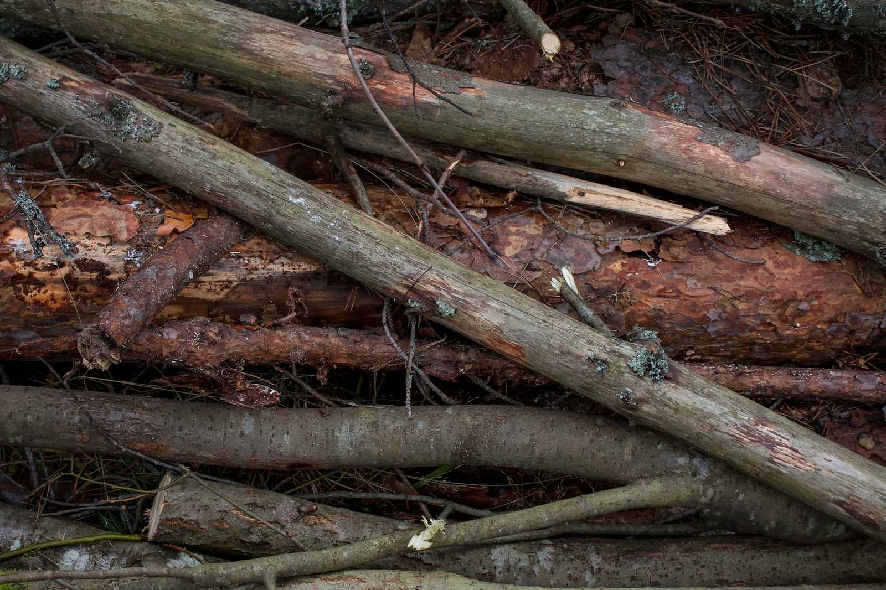

Junk removal services in the Inland Empire
These are the jobs people ask about most. Send one request, and local providers can quote it.

Furniture & Appliance Removal
Couches, recliners, mattresses, dressers, tables, refrigerators, washers, dryers, and other bulky items, carried out from wherever they sit, not just from the curb. Appliances with refrigerant, like fridges, freezers, and AC units, need to go to a facility that can handle them safely, so ask where they'll end up.
Garage & Home Cleanouts
Clearing out a packed garage, attic, spare room, or the whole house. Crews can haul everything at once, or work around items you want to keep. Tell providers roughly how much there is (a few items, a pickup load, a full garage) so quotes are accurate.

Yard Waste Removal
Branches, brush, palm fronds, old sod, dirt, and leftovers from landscaping projects. Good for cleanups that are too big for your green-waste bin, or for clearing out overgrowth before fire season.
Construction Debris Removal
Drywall, lumber, flooring, cabinets, tile, and other leftovers from a remodel or DIY project. Concrete, dirt, and roofing are heavy, so mention them up front. They often cost more to haul and may need a different truck or trailer.
Hot Tub & Shed Removal
Taking apart and hauling away old hot tubs, spas, sheds, playsets, and similar structures. Before the crew arrives, the hot tub's power should be disconnected by a qualified electrician. Larger demolition jobs may need a licensed contractor.

Estate & Move-Out Cleanouts
Emptying a home after a move, a sale, or the loss of a loved one, or between tenants. Many providers can set aside items for donation or recycling, and some will sweep out the space when they're done.
Prices depend on how much there is, what it is, how hard it is to reach, and disposal fees. The only reliable number is a written quote from a provider who has seen the items or clear photos of them.
Not sure what can go?
Most providers take furniture, appliances, electronics, mattresses, boxes, yard waste, and construction leftovers. Hazardous materials usually need to go through your county's program instead. See our hazardous waste guide, plus our guides to mattress disposal and hot tub removal.